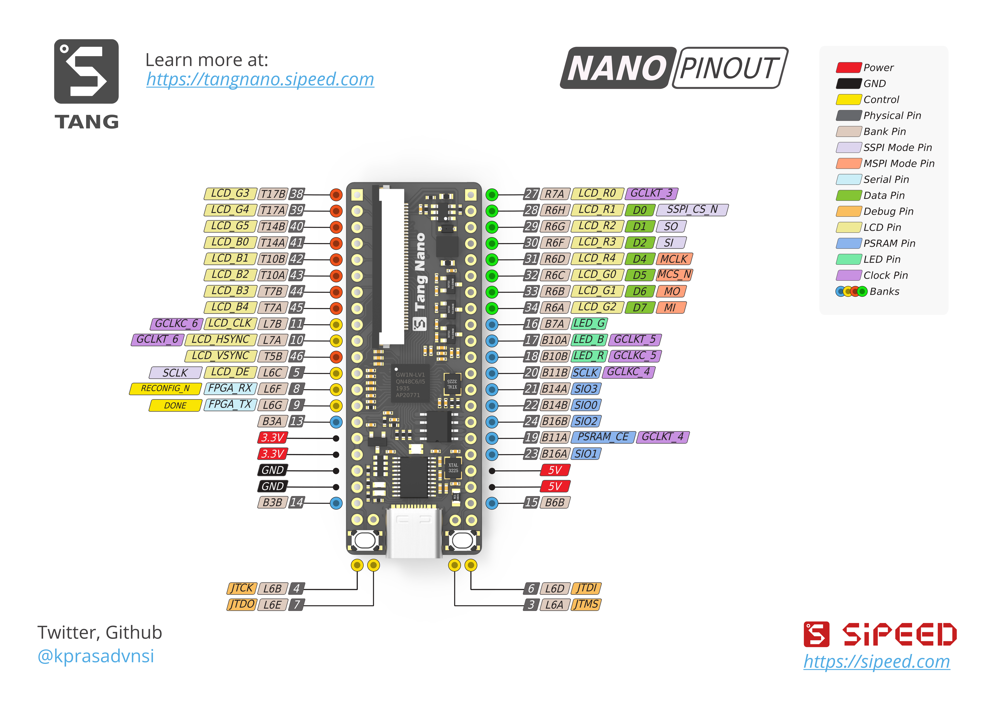

Tang Nano Document
1. What is Tang Nano?
The Lichee Tang Nano is a compact development board based on the GW1N-1 FPGA from the Gaoyun Little Bee series.
The onboard chip is GW1N-LV1QN48C6/I5, equipped with 1152 LUT4 logic resources, 1 PLL and 4 Block total 72Kbit SRAM, packaged as QFN48. The development board brings out all I/O interfaces for the design and experimentation of small digital logic.
Onboard 64Mbits PSRAM provides a rich storage resource for FPGAs.
At the same time, the development board has an RGB interface that can be connected to peripherals such as LCD screens and VGA converters, making it ideal for applications such as screen displays.
The board's onboard 24MHz crystal and USB to JTAG downloader make it easy to connect to a PC for development without the need for an external debugger and clock input. The onboard RGB LEDs can be used for indication and debugging, while the FPGA IOBANK group's adjustable IO levels allow the development board to easily interface with externally different level specifications.
Onboard resources:
- GW1N-1
- 64Mbit QSPI PSRAM
- RGB LED
- RGB LCD 40P interface and drive circuit
- 24MHz crystal
- USB debugger, based on Type-C communication interface
2. Pinout Diagram
